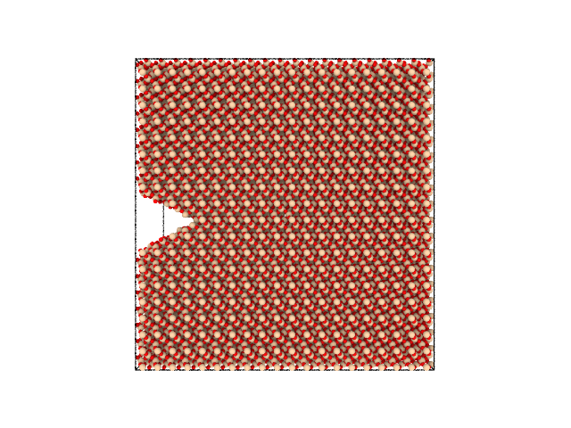

Cracks¶
To create a v-shaped defect in a material, the Notch geometry can be used. In this example we create a slab of \(\alpha\)-quartz and carve out a crack made with the Notch geometry.
First, we import the necessary packages:
from molecular_builder.core import create_bulk_crystal, write, carve_geometry
from molecular_builder.geometry import NotchGeometry
import ase.cell
Then, we create our slab of \(\alpha\)-quartz. We use block dimensions of (100Å, 50Å, 100Å)
L = [100,50,100]
quartz_structure = create_bulk_crystal("alpha_quartz", L)
cell = quartz_structure.get_cell(); cell[0,1] = 0; cell[1,0] = 0; cell[0,2] = 0; cell[2,0] = 0; cell[1,2] = 0; cell[2,1] = 0
quartz_structure.set_cell(cell); quartz_structure.wrap()
The code below will create and carve out a crack in the \(\alpha\)-quartz using the Notch geometry:
crack = NotchGeometry([0,L[1]/2,L[2]/2], [20,0,0], [0,0,10])
carve_geometry(quartz_structure, crack, side="in")
The resulting system looks like this:

An crack in a slab of \(\alpha\)-quartz.¶
Full code of this example:
from molecular_builder.core import create_bulk_crystal, write, carve_geometry
from molecular_builder.geometry import NotchGeometry
import ase.cell
L = [100,50,100]
quartz_structure = create_bulk_crystal("alpha_quartz", L)
cell = quartz_structure.get_cell(); cell[0,1] = 0; cell[1,0] = 0; cell[0,2] = 0; cell[2,0] = 0; cell[1,2] = 0; cell[2,1] = 0
quartz_structure.set_cell(cell); quartz_structure.wrap()
crack = NotchGeometry([0,L[1]/2,L[2]/2], [20,0,0], [0,0,10])
carve_geometry(quartz_structure, crack, side="in")
write(quartz_structure, "alpha_quartz_with_crack.png", camera_dir=[0, 1, 0], viewport_type="perspective")